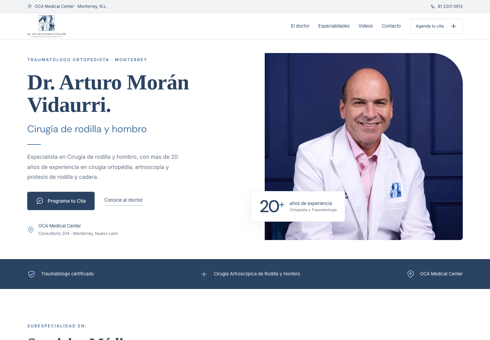
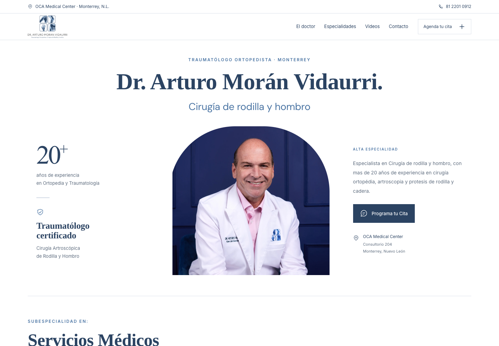
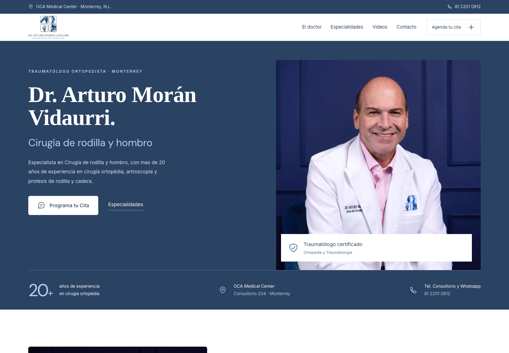

01CLARA · MÉDICA · CERCANA
Claridad clínica
Una composición luminosa, un retrato cercano y una jerarquía clara. La especialidad y la confianza, desde el primer momento.
UNA MISMA IDENTIDAD. TRES DIRECCIONES.
Tres propuestas para una imagen médica actual, profesional y cercana.
El mismo doctor. La misma identidad. Una nueva forma de presentarla.

01CLARA · MÉDICA · CERCANA
Una composición luminosa, un retrato cercano y una jerarquía clara. La especialidad y la confianza, desde el primer momento.

02ELEGANTE · SERENA · PERSONAL
Tipografía clásica, márgenes amplios y una presencia más personal. Una expresión sobria de experiencia y atención especializada.

03SÓLIDA · PRECISA · CONTEMPORÁNEA
El azul institucional y una fotografía protagonista. Una presencia firme, con especialidades bien definidas y acceso directo a consulta.